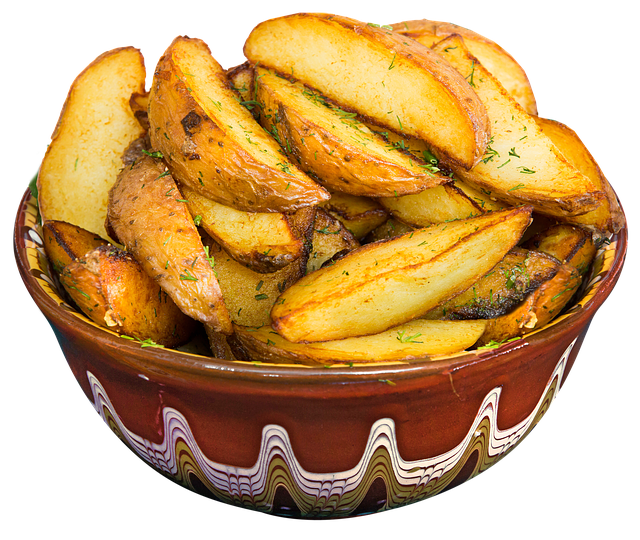

Класическата българска кухня е впечатлявала ценители от различни народи и хората по цял свят. Кои са традиционните български ястия, които трябва да познавате и да сте опитали поне веднъж в живота си, научете сега:
10 популярни български рецепти за традиционни ястия

Много от ястията на националната българска трапеза, присъстват и при други балкански народи. Това е така, защото са заимствали едни от други или са се допълвали през вековете на своята история.
Традиционни български ястия са: шопска салата, гювеч, кьопоолу, катък, мусака, кебапчета, кюфтета, баклава, реване и още други. Кисело мляко и бяло сирене са най-типичната българска кухня.
Всички тези традиционни национални рецепти, направиха България известна по целия свят. Те се предлагат в различни форми и начин на сервиране. Те винаги присъстват на българската трапеза.
Предлагаме ви, класация с Топ 10 традиционните български рецепти, които всеки жител на България трябва да знае!
-
Супа с боб или бобена чорба
Това е традиционна българска супа, приготвена с варен фасул (често бял боб), зеленчуци: моркови, домати, чушки, лук и подправки, които могат да се използват със или без сос.
Често към супата от боб се добавя наденица или сланина.
Боб супата се приготвя под формата на ритуално ястие в навечерието на Коледа. Известна е като постен български боб.
-
Баница
Баница е българска традиционна рецепта, (понякога дори постна). Пластовете на баницата са сгънати на спирала или подредени на слоеве.
Баницата е най-често срещаната рецепта със сирене и яйца.
В различни части на България може да опитате баници с различни пълнежи от: тиква и захар (известни като тиквеник), зеле или лук, спанак, ориз, месо.
Има и баница за десерт. Това е, когато към тестото се добави мляко. Тогава баницата се сервира на масата с идеята за десерт.
-
Таратор
Тараторът е студена супа и е едно от най-популярните бързи ястия, което обикновено се приготвя лесно, у дома.
Съставките за приготвяне на студена българска супа са: кисело мляко, вода, ситно нарязана на кубчета или настъргана краставица, растително масло, сол, копър, счукан или ситно нарязан чесън.
По желание към таратора, могат да се добавят смлени орехи.
-
Месна яхния (Гювеч)
Самото име на ястието „Гювеч“ обединява различни български ястия, приготвени в глинен съд, с капак и запечени във фурна.
Всъщност думата „гювеч“ се използва за назоваване на съд, а когато е малък се нарича гърне.
Ястията в Гювеч се приготвят по различни рецепти и могат да съдържат или месо (свинско, телешко, агнешко или заешко) или да са постни.
-
Сарми – пълнени листа
През лятото, пък и през зимата, когато има кисело зеле, сармите са често основното българско ястие. За сарми се използват предимно лозови или зелеви листа. Пълнят се и червени чушки (може пресни, а може и сушени). Пълнежът е направен от запържен лук, пържен ориз (може и кайма) и всичко е подправено със сол и черен пипер. За пълнежа могат да се използват и: моркови, гъби, сирене и много други.
-
Шкембе чорба
Супата се приготвя от добре сварено и нарязано шкембе на говеждо или свинско, почистено и нарязано специално за супата. Чесън, оцет, лют червен пипер или чили се добавят за подправяне на шкембе чорбата.
-
Чушки палени с ориз
Ястието се приготвя от ароматни, пресни или сушени чушки. Чушките се пълнят по различни начини, както с месо, така и без него, по вегетариански начин – само с ориз и подправки, може и настърган морков, картоф и на ситно нарязан червен лук.
-
Капама
Капама е традиционно българско ястие от района на Югозападна България. Историята на региона в България е Разлог.
Приготвя се от различни продукти: няколко вида месо – свинско, пилешко, говеждо, заешко, кисело зеле, а към тази смес се добавят наденица или кървавица и ориз. За постигане на уникалния аромат и вкус на капамата са използвани три важни условия.
Първо е използвана подправка е черен пипер и дафинов лист.
Второ, следи се за реда на пластовете храна, което е важно при самото печене.
Трето, съдът се пече поне или повече от 4-5 часа на слаб огън и в херметически задушена глина.
-
Пататник
Картофите и сиренето се използват за приготвяне на пататник. Към това може да бъде добавено или месно, или безмесно (постно или вегетарианско) меню.
Класическата рецепта за пататник е постна. Използват се само картофи, сирене, яйца, лук, от подправки – сол, черен пипер, чубрица и масло.
Сервира се с кисело мляко или зеленчуци.
-
Чеверме
Един от специалитетите на българската барбекю кухня е цялото агне, печено на шиш. Това ястие е типично за Родопите, но се прави и в други части на България.
Традиционно чеверме може да събере много хора около трапезата, затова се прави на големи празници или около семейни традиционни събирания.
Добър апети на всички, които останаха с нас и решиха да изберат една от традиционните български рецепти за своята трапеза!